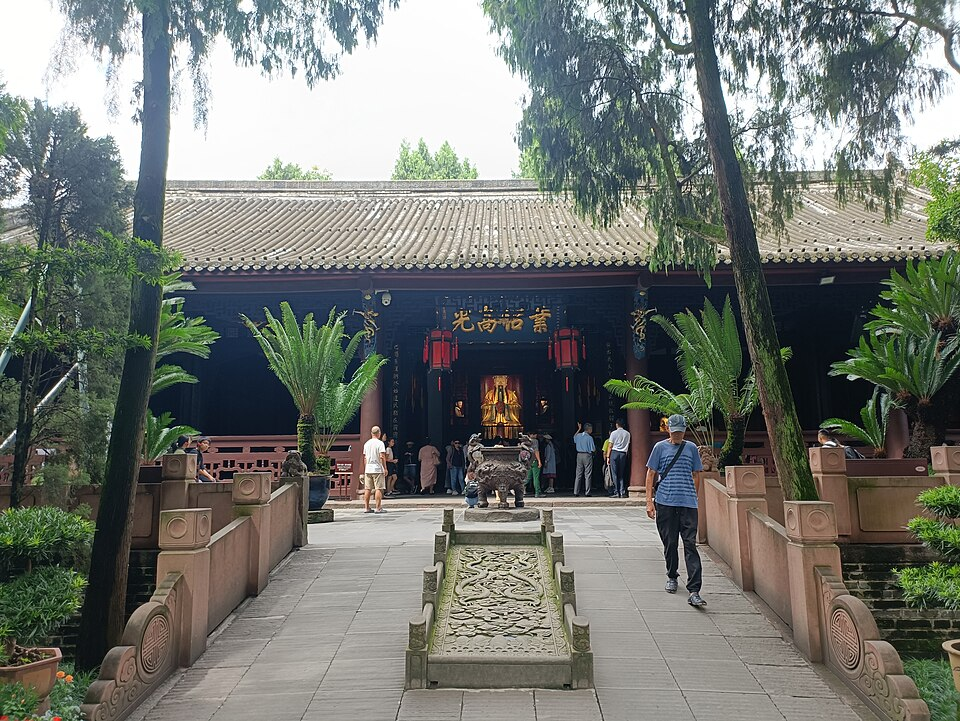
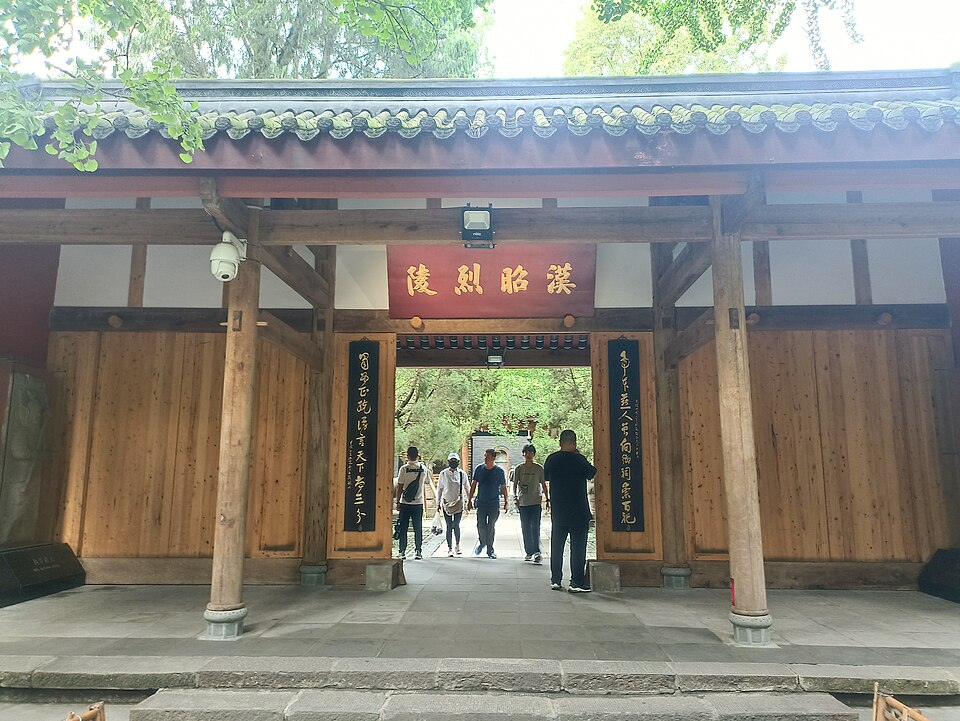

★ 兩篇以上攻略或官方都提到；單一來源 只有一篇。 大眾點評、小紅書、知乎擋爬蟲，人均多半未查到；有寫的是攜程或去哪兒的數字（2026/11 查）。點菜記得說「微辣」。
⛩️ 武侯祠＋錦里
目標
① 劉備殿、諸葛亮殿：照官方路線一順著中軸往北走 ★ ② 惠陵（劉備墓）：別看完祠堂就走 單一來源 ③ 紅牆夾道：在惠陵門前兩側 ★。文物區大門進，出館往東（左轉）就是錦里 ★。
路線（入口 0 分～約 2 小時，步行共約 1.0 km、約 14 分）
官方地圖：官網參觀須知（服務設施圖）、官網導覽圖（參觀路線），授權未說明，只放連結。
- 起+0:00 文物區大門（漢昭烈廟）：上午 9 點開館就進，人少 ★；要過安檢
- 1+0:05 唐碑（三絕碑）：唐元和四年（809）立的《蜀丞相諸葛武侯祠堂碑》，文章、書法、鐫刻都好，所以叫「三絕碑」 ★（步行約 1 分）
- 2+0:15 劉備殿：劉備坐像高 3 m、全身貼金，是整座廟最高大的像；東偏殿關羽、西偏殿張飛；殿前東西廊有文臣、武將塑像 28 尊（官方）（步行約 1 分）

Kcx36・CC BY-SA 4.0・Wikimedia Commons（2023-08） - 3+0:45 諸葛亮殿：神龕裡的諸葛亮像羽扇綸巾，懸「靜遠堂」匾；兩旁是兒子諸葛瞻、孫子諸葛尚（官方）。武侯祠裡有名的「攻心聯」 ★，掛在哪一殿未查到（步行約 1 分）

Kcx36・CC BY-SA 4.0・Wikimedia Commons（2023-08） - 4+1:05 三義廟：劉關張塑像照《三國演義》塑，形象較年輕；1998 年從提督街遷建過來（官方）（步行約 2 分）
- 5+1:20 惠陵（劉備墓）：封土高 12 m、周長 180 m，由照壁、山門、神道、寢殿組成（官方）（步行約 3 分）

惠陵山門・Kcx36・CC BY-SA 4.0・Wikimedia Commons（2023-08） - 6+1:35 紅牆夾道 ★：惠陵門前兩側的紅牆青石路，牆外是竹林；清晨光線最好 單一來源；是共用通道，拍完讓開 單一來源（步行約 1 分） 沒有合格照片（Commons 只有 2017、2019 年拍的）：百度圖片搜尋 →
- 7+1:45 三國文化陳列室：官方路線一的最後一站；旁邊有廁所 ★（步行約 1 分）
- 終+2:00 錦里大門：出館往東（左轉）就到，錦里古街往北走（研判，依 OSM）（步行約 4 分）
時刻是估算（步行用 OSRM 距離 ÷ 80 m／分，停留時間自己分配，總長對齊官方路線一的 2 小時）；座標取自 OpenStreetMap，紅牆夾道借用惠陵大門的座標。
時間
- 12 月 09:00～18:00，17:00 停止入館（官網；大河票務網同，可能轉抄官網）
- 上午 9 點人少 ★（大河票務網另寫下午 4 點也人少 單一來源）；節假日正殿人多 單一來源
- 要花多久兩說：官網路線一 2 小時；攜程遊記寫武侯祠 2～3 小時、錦里 1 小時
實用
- 門票 50 元（官網）；要先在官網或官方微信線上預約購票，接近最大承載量時會限流、分時段入園（官網）；官方沒有委託任何單位在網路上賣門票、講解票；台胞證能不能在官網買全票未查到
- 10 號線武侯祠（錦里）站 A2 口，步行 3 分（官方）
- 免費導覽：微信公眾號「成都武侯祠」→ 讲解导览，中英文（官方）；地圖導覽機 20 元
- 入館要過安檢；打火機、火柴可交安檢處暫放，出館取回（官方）；寄物處未查到
- 廁所：三國文化陳列室旁 ★；官網服務設施圖另標遊客中心旁、孔明苑旁、三義廟東側
- 休館：沒查到武侯祠 2026 年的閉館公告，出發前看官網公告
- 三義廟東邊可能有門直通錦里，但出去後能不能再入館未查到，路線不走這條
吃的、文創
- 順路（錦里）：三大炮豆花铺(锦里店)：三大炮，人均 ¥11，锦里九品街10号 單一來源；張飛牛肉、牛肉豆花、傷心涼粉、糖油果子、缽缽雞 單一來源
- 錦里小吃淺嘗就好，別當正餐 單一來源；按「克」「兩」計價的先問價（官方）
- 不順路：钟水饺(武侯店)（武侯祠大街2号）：鐘水餃、甜水麵、擔擔麵，人均 ¥25（攜程）單一來源
- 錦里的茶館、咖啡、文創店名：未查到
來源：武侯祠官網導覽圖、官網票務資訊、攜程遊記 2023-03、大河票務網 2025-03、去哪兒 2026-06。筆記：0000_武侯祠_園內路線、1211_成都市區景點攻略